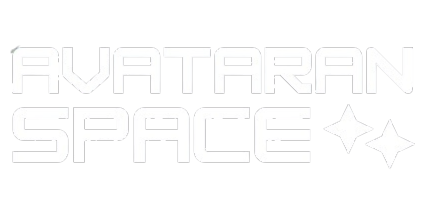

Full-Stack On-Orbit Servicing
Engineering the future of satellite missions.
Avataran Space is building technologies for in-space servicing, assembly, and manufacturing with a vision to transform space systems from single-use hardware into maintainable and upgradable assets.